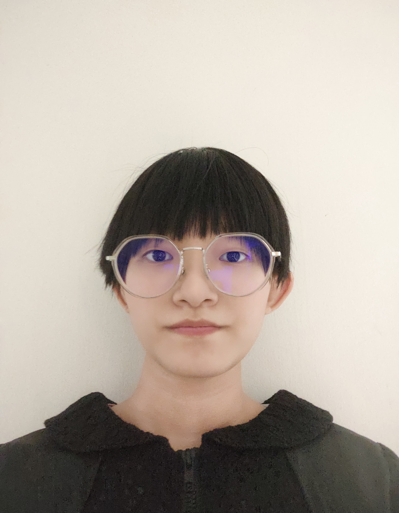

My name is Christine,
and I am a Digital Media student. I enjoy exploring different forms of digital content,
including graphic design,
video editing,
and web design. I am interested in how creativity and technology can work together to create engaging
experiences for people.
Outside of my studies,
I enjoy listening to music,
reading novels,
and writing stories. Creating original characters and developing story ideas are some of my favorite hobbies. I
also like watching videos and learning new editing techniques that can improve my creative projects. Studying
Digital Media has helped me develop both technical and creative skills.
